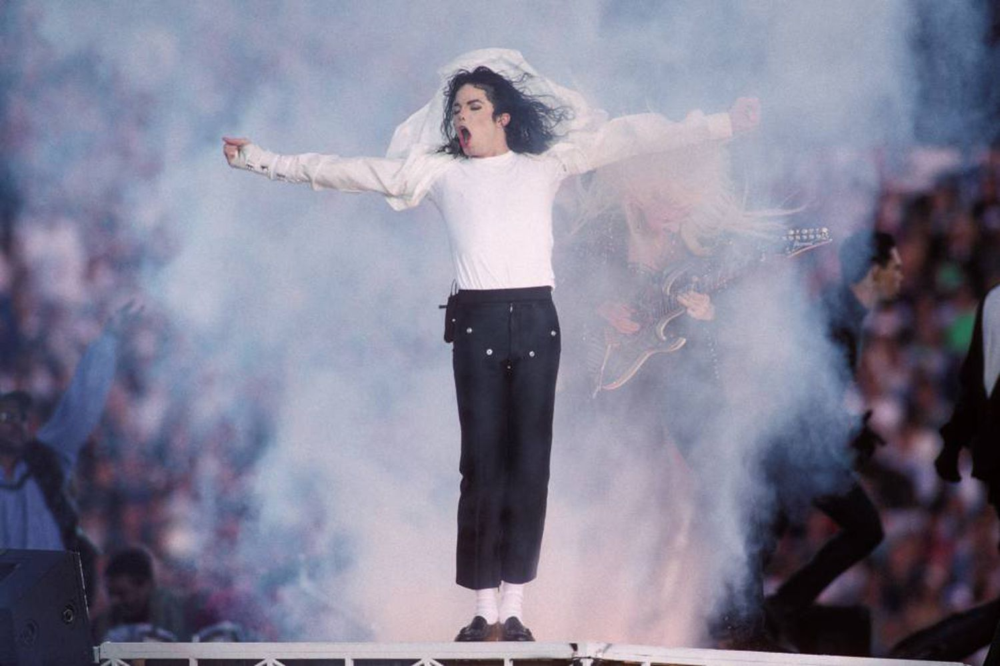

Mickael Jackson
Cantante Pop

Con un show de 13 minutos y 25 segundos, el Rey del Pop cambió el sentido del medio tiempo del Super Bowl.
Datos del Cantante
- 1958 - Nacio en Gary, Indiana, Estados Unidos.
- 1975 - En junio de 1975, The Jackson 5 firmaron con Epic Records.
- 1982 - Lanzo el exito de la cancion Thriller.
- 1983 - En noviembre de 1983, Jackson y sus hermanos se asociaron con PepsiCo.
- 1986 - En 1986, a Jackson se le diagnosticó vitíligo, por lo que su piel fue perdiendo pigmentación.
- 1991 - En marzo de 1991, renovó su contrato con Sony por 65 millones de dólares.
- 1993 - En febrero de 1993, Jackson accedió a ser entrevistado por Oprah Winfrey.
- 1995 - En 1995 publicó el álbum doble HIStory: Past, Present and Future, Book I.
- 2001 - En octubre de 2001 Jackson publicó el álbum Invincible.
- 1991 - En marzo de 2006, las autoridades estadounidenses ordenaron el cierre de su rancho Neverland.
- 2009 - En la mañana del 25 de junio de 2009, Michael Jackson sufrió un paro cardiorrespiratorio en su mansión alquilada de Holmby Hills.
Mejores canciones